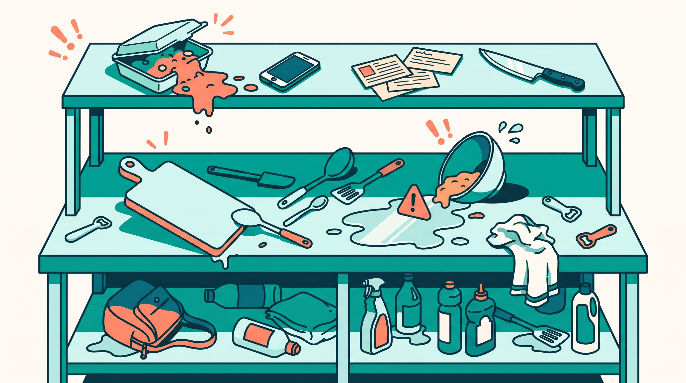
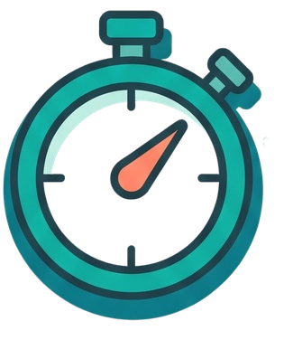
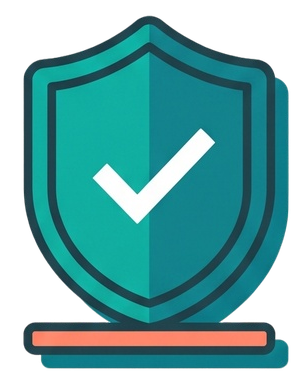
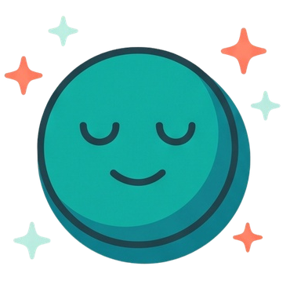
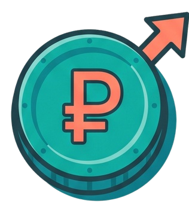
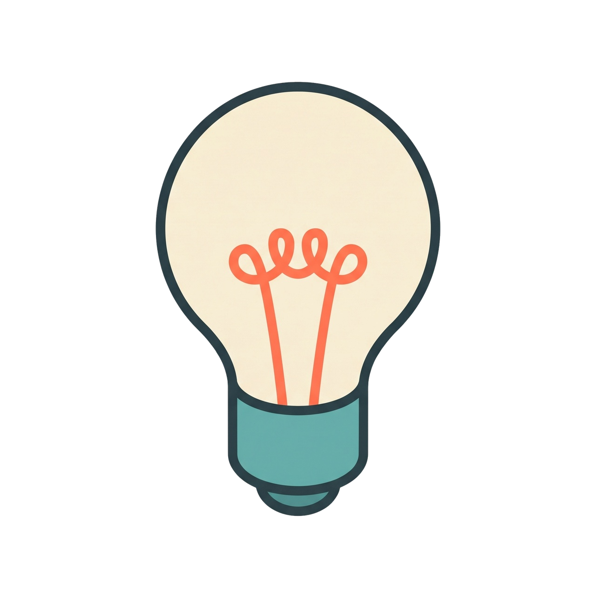
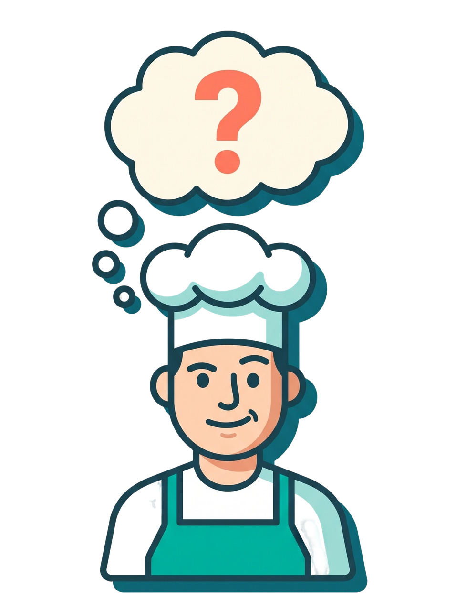
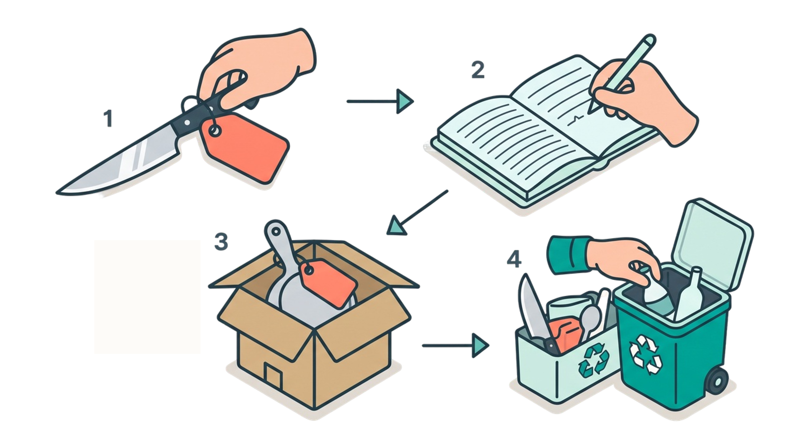
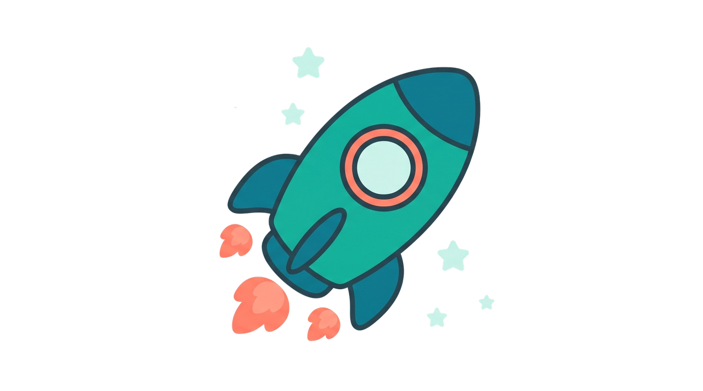

5С для кухни
Система, которая возвращает порядок, скорость и спокойствие на рабочем месте повара.
План курса
Введение в 5С
Что такое система 5С, зачем она нужна на кухне и как она влияет на скорость, безопасность и стресс.
Сортировка
Учимся оставлять только нужное. Разбираем красные бирки и избавляемся от лишнего.
Расположение
Каждая вещь на своём месте. Правило 30 секунд и организация рабочего пространства.
Уборка
Чисто не там, где убирают. Как поддерживать порядок «по ходу» смены и не тратить на это силы.
Стандартизация
Фото-стандарты, маркировка и чек-листы. Как сделать порядок привычкой для всей команды.
Совершенствование
Регулярный аудит и доска идей. Как улучшать рабочие места каждый день.
Знакомая картина?
Час пик. Заказы идут один за другим. Вы ищете чистую доску — её нет на месте. Нож, который нужен, куда-то пропал. На плите что-то подгорает, а под рукой нет тряпки. Гости ждут. Вы нервничаете.

Что такое 5С
5С — это пять шагов для удобного и безопасного рабочего места.
Наведите курсор на шаг, чтобы узнать подробности.
5С — это пять шагов для удобного и безопасного рабочего места.
Нажмите на шаг, чтобы узнать подробности.
Зачем это нужно на кухне
Это система, которая влияет на вашу ежедневную работу.
Наведите курсор на карточку, чтобы узнать подробности.
Это система, которая влияет на вашу ежедневную работу.
Нажмите на карточку, чтобы узнать подробности.




Мини-опрос
Что чаще всего мешает или теряется на вашем рабочем месте на кухне?

Итог модуля
- 5С — это пять шагов: сортировка, расположение, уборка, стандартизация, совершенствование.
- 5С — не про уборку, а про систему работы на кухне.
- Результат: скорость, безопасность, меньше стресса и потерь.
Сортировка
Первый шаг к порядку. Учимся оставлять только нужное и избавляться от лишнего.
Зачем сортировать?
Сортировка — это первый шаг. Задача простая: оставить на рабочем месте только то, что нужно для работы. Всё остальное — убрать, переместить или выбросить.
Когда на столе лишнее — оно мешает. Вы тратите время на поиск нужного, путаетесь, чаще ошибаетесь. На кухне это особенно заметно в час пик.

Что считается «лишним»
Слева — критерии «лишнего». Справа — примеры. Соедините критерий с подходящим примером, кликая сначала на критерий, затем на пример.
Нажмите на критерий, затем на пример.
Красная бирка
Красная бирка — это инструмент визуального контроля. Вы помечаете предмет, который вызывает сомнения (сломан, не используется, лежит не на месте), и даете ему «испытательный срок». Это помогает не выбрасывать нужное по ошибке и не хранить годами хлам.
- Пометить — наклеить красную бирку на предмет.
- Записать — что это, откуда, почему лишний.
- Переместить — в специальную зону «карантина».
- Решить — в течение 1–3 дней: вернуть, передать, выбросить.

Чек-лист на сегодня

Не откладывайте на завтра! Выберите, что вы можете сделать уже сегодня (отметьте минимум один пункт, чтобы продолжить).Отметь, что сделаешь уже сегодня:
- Сломанный инвентарь — утилизировать
- Просроченные продукты — утилизировать
- Продукты без маркировки — промаркировать
- Лишнее количество предметов — оставить нужное
- Личные вещи — убрать
Итог модуля
- Сортировка — оставить только то, что нужно для работы.
- Лишнее — всё, что не используется прямо сейчас.
- Красная бирка — способ разобраться, а не выбросить.
1. Что такое 5С?
2. Почему без системы 5С на кухне заказы готовятся медленнее?
3. Верно или неверно: Красная бирка означает, что предмет нужно немедленно выбросить.
4. Что нужно сделать с предметом, который вы пометили красной биркой?
5. Какое «С» в системе 5С идет первым?
6. Что такое сортировка в системе 5С?
7. Верно или неверно: На рабочем столе повара можно хранить запасной инвентарь (3-4 половника).
8. Что из этого — «лишнее» на рабочем месте повара? (Выберите все правильные ответы)
9. Найдите 7 лишних предметов на картинке
Кликайте по предметам, которые считаете лишними на рабочем месте. При клике появится пояснение.
Тест завершён!
Поздравляем!
Вы завершили демонстрационную часть курса.
Применяйте принципы 5С на своей кухне, и порядок станет вашей привычкой.